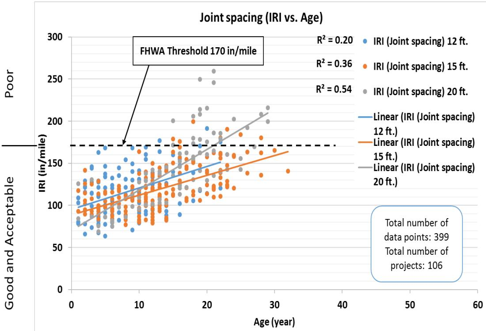
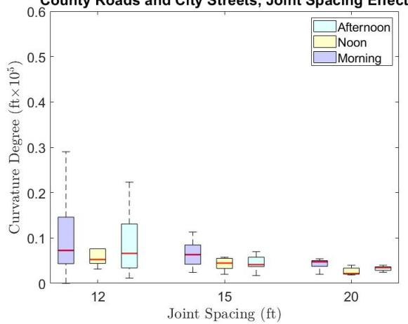
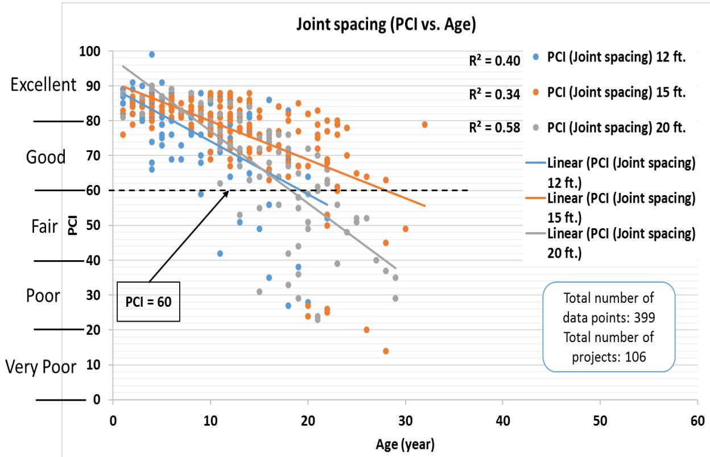
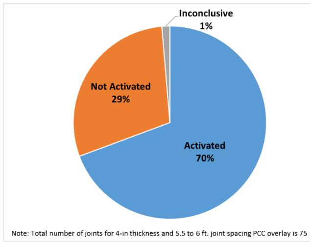
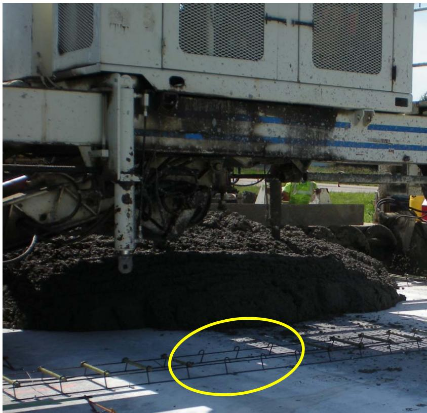
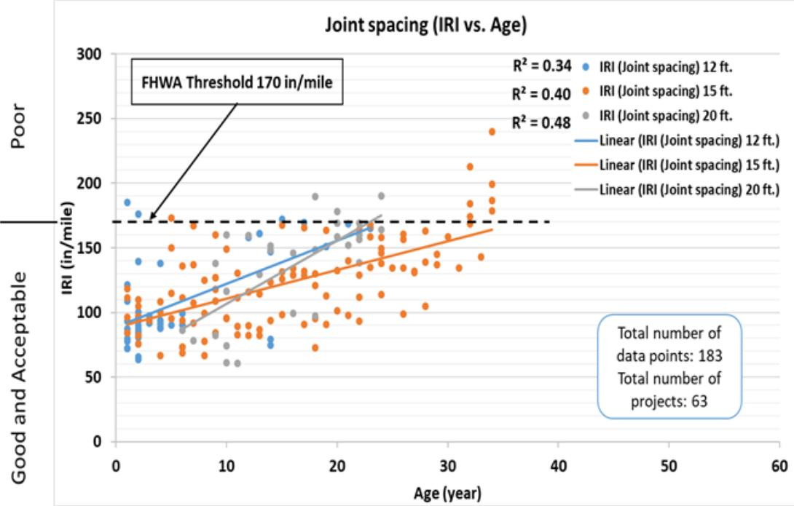
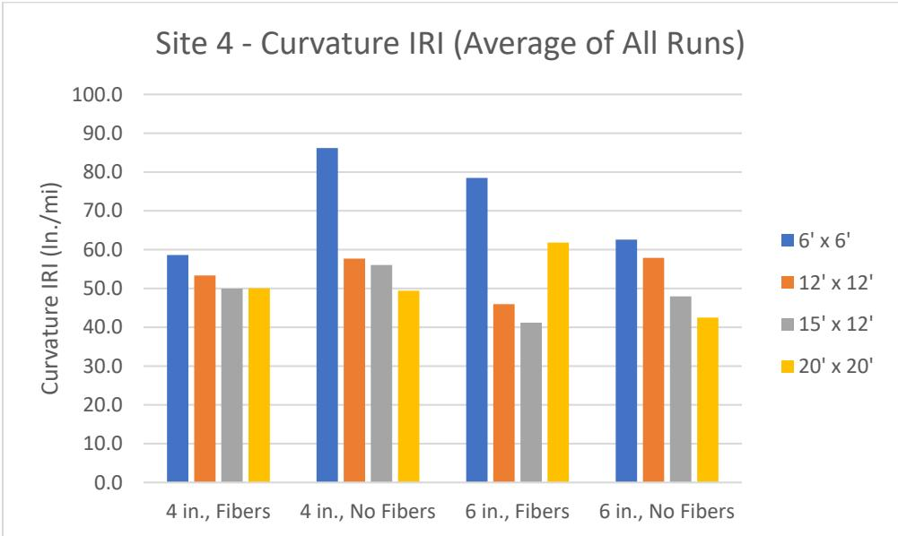
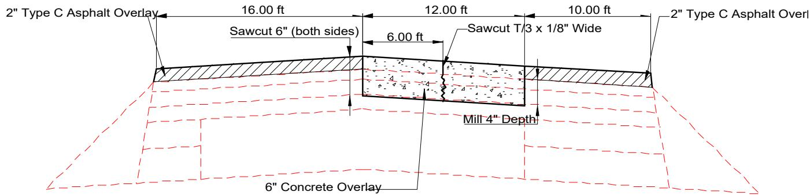
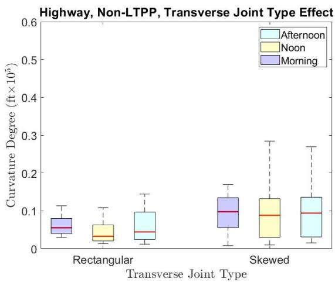

Joint Spacing Effects on Performance
Joint spacing is a critical parameter within slab design and geometry that directly influences the magnitude of curling stresses at slab corners. Because curling and warping tend to increase with larger slab dimensions, reducing joint spacing effectively shortens the cantilever length, which lowers peak tensile stress under thermal gradients [1]. This relationship highlights why thinner overlays are often constructed with shorter joint spacing to mitigate these effects [1]. The page examines the relationship between transverse joint spacing in concrete overlays and long-term performance as measured by PCI, IRI, and joint activation behavior. Studies of 1,201 data points from 384 Iowa overlay projects (Phase 1, 2017) and controlled analytical and field testing (Phase 2A, 2019) found that shorter joint spacing generally improves performance, with the L/ℓ ratio serving as a key design indicator.
Sources (6)
Phase 1: Performance Findings (2017)
Shorter joint spacings, specifically 12 ft and 15 ft, produced better IRI performance than 20-ft spacing, with the 12-ft joint spacing producing the best IRI among all spacings studied; conversely, the 20-ft spacing is the least desirable for IRI performance [1]. Additionally, shorter transverse joint spacing (5.5–6 ft) showed better PCI and IRI performance in the first 10 years compared to 12-, 15-, and 20-ft spacings. An anomalous finding noted that 12-ft joint spacing had lower PCI performance than 15- and 20-ft spacing, though field investigation revealed this was due to project-specific material and construction issues, not the joint spacing itself [1]. However, historical data indicates that older unbonded concrete on concrete (UBCOC) overlays with larger slab sizes can provide good long-term performance after 20 years, despite shorter slabs showing better early-life results [1].

UBCOC IRI performance history categorized by concrete overlay joint spacing [1]In county roads and city streets, slabs with a 15 ft joint spacing exhibit the highest average degree of curling and warping across most indicators compared to 12 ft and 20 ft spacings. Specifically, curvature IRI ranges from 42.4 to 110.0 in./mile for 15 ft spacing versus 33.9 to 58.9 in./mile for 12 ft spacing [2].

Transverse joint spacing effects on county roads and city streets: (a) curvature IRI, (b) deflection, (c) deflection ratio, (d) degree of curvature (12 ft joint spacing [3 sites, 32 data points], 15 ft joint spacing [3 sites, 39 data points], 20 ft joint spacing [1 site, 15 data points]) [2]Overlay Type Analysis: UBCOC vs. BCOA
Regarding Overlays on Asphalt (BCOA), specifically bonded concrete on asphalt overlays, shorter joint spacings of 5.5 to 6 feet maintain PCI values above 80 and IRI below 100 in/mi during the first decade, whereas 12-foot spacing drops below a PCI of 60 within 25 years [1]. In contrast, for unbonded concrete on asphalt (UBCOA) overlays, a 20-foot joint spacing maintains PCI values above 70 for up to 22 years, outperforming 12-foot spacing which drops below 60 within 18 years [1].

presents changes in PCI values with age for three different concrete overlay joint spacings. Figure 50. UBCOC PCI performance history categorized by concrete overlay joint spacing [1]Iowa Overlay Distribution Statistics
Regarding the distribution of existing Iowa overlays, 48% used 15–20 ft joint spacing, while 30% used 12 ft [1]. Additionally, 12% used 5.5–6 ft and 10% used 6–11 ft [1].
Phase 2A: Analytical Investigations & Modeling
Analytical investigations have yielded varying results regarding joint spacing in overlays. AASHTOWare Pavement ME predicted similar IRI performance for 12-foot to 20-foot joint spacing in 4–6 inch overlays, whereas BCOA-ME showed that shorter spacing (6-foot) provides better performance and potentially allows thickness reduction. Consequently, increasing spacing from 6-foot to 12–15 foot may require additional thickness for the same traffic [3].
 12-foot joint spacing concrete overlays using BCOA-ME design predicted thickness versus maximum allowable percentage of cracked slabs [3]
12-foot joint spacing concrete overlays using BCOA-ME design predicted thickness versus maximum allowable percentage of cracked slabs [3]
Joint Activation and L/ℓ Ratio Dynamics
Joint spacing is the predominant factor affecting joint activation, as longer spacing leads to more rapid and complete activation. While conventional spacing (11–12 feet and greater) achieves near 100% activation within two years, short slab sections (5.5–6 feet) may have only 60–80% activation, representing inefficient design. The L/ℓ ratio (slab length to radius of relative stiffness) correlates strongly with activation behavior; therefore, the L/ℓ ratio should be considered alongside traditional spacing recommendations, and joint spacing should be designed to achieve L/ℓ between 4 and 7 for optimal joint activation [3].

5.5- to 6-foot joint spacing [3]Joint opening movements generally follow a sinusoidal pattern over time, with values normalized to 70°F for comparison [4]. Notably, unactivated joints do not necessarily predict poor load transfer performance or indicate dominant joint behavior; in fact, the worst-performing projects in terms of LTE all had 100% joint activation rates [5].
 Average versus standard deviation of joint LTE at each site [5]
Average versus standard deviation of joint LTE at each site [5]
Load Transfer Efficiency and Material Factors
Dowelled joints perform significantly better than non-dowelled joints, with an estimated service life lasting 2.5 times longer before requiring maintenance or rehabilitation, a performance gap attributed to dowel bars minimizing upward curvature locked in during construction [2]. In unbonded concrete overlays, omitting dowel bars between wheel paths can be a unique design feature that maintains load transfer while potentially reducing material usage; this configuration places 1-inch diameter dowel bars at 12-inch center-to-center spacing only within the wheel paths [6]. For overlays without fiber reinforcement, load transfer values typically range from 75% to 100%, with sections near the 75% threshold showing improvement over time [4], though the addition of fibers to the overlay mix does not significantly impact faulting levels or joint opening magnitudes [4].

– SD Route 50 Dowel Bar Configuration (note omitted dowels between the wheel paths) [6]Statistical analysis of joint load transfer efficiency (LTE) indicates that while fiber reinforcement and overlay thickness do not significantly affect LTE, shorter transverse joint spacings (5.5 ft or 6 ft) produce statistically significant reductions in average joint LTE compared to longer spacings of 12 ft or greater [5].
 Joint-by-joint LTE results for Site 6C [5]
Joint-by-joint LTE results for Site 6C [5]
Long-term PCI and IRI Performance Trends
Regarding long-term IRI performance, unbonded concrete on asphalt (UBCOA) overlays with 15-foot and 20-foot spacings remain below 170 in/mi for up to 35 years, while 8-inch thicknesses exceed this threshold after 33 years [1]. For unbonded concrete on asphalt (BCOA), a 6-inch thickness maintains IRI below 170 in/mi for up to 37 years, whereas 4- and 5-inch thicknesses exceed this limit after 35 years [1].

UBCOA IRI performance history categorized by concrete overlay joint spacing [1]Furthermore, curvature IRI values for sections with 6 ft joint spacing are significantly higher—by 17.7 to 22.7 in./mi—than those for sections with 15 ft and 20 ft spacings, indicating that shorter slabs may exhibit increased roughness due to curling effects despite improved overall IRI trends [5]. Consequently, the choice of joint spacing should consider both PCI and IRI as separate performance metrics.

Average Curvature IRI results across all visits for Site 4 [5]Design Implications for Joint Spacing and Thickness
Joint spacing is one of several design variables (along with thickness, overlay type, and materials) that influence long-term overlay performance. For UBCOCs, shorter joint spacings (12–15 ft) are recommended for better long-term IRI, whereas for BCOAs, 5.5–6 ft spacing provides better early-life performance. When matching existing gutters during overlay construction, aligning joints is preferred over installing expansion or isolation joints because the latter are prone to higher maintenance costs; additionally, transition lengths can be reduced for design speeds less than 70 mph [6].

– US-13 Bonded Overlay Typical Section [6]Furthermore, using skewed joints can increase stress by approximately 5% due to curling and warping restraint, potentially leading to delamination and corner cracking at active plate corners. Consequently, the use of skewed joints is recommended against in favor of conventional joint orientations [2].

Joint type effects on non-LTPP sections: (a) curvature IRI, (b) deflection, (c) deflection ratio, (d) degree of curvature (rectangular joints [3 sites, 46 data points], skewed joints [9 sites, 125 data points]) [2]Construction and Environmental Considerations
Load transfer performance is sensitive to surface preparation, with scarification providing better results than patching or stress relief layers [4]. For unbonded overlays over concrete in non-arid climates, a positive drainage path must be provided for surface moisture to exit the interlayer bond breaker to prevent interlayer erosion under heavy traffic loadings; consequently, designers should compare asphalt or geotextile interlayer costs, construction time, and performance when selecting separation layers [6]. When correcting irregularities in cross-slope and profile for unbonded overlays over concrete, the thickness of the concrete should be varied rather than adjusting the depth of the asphalt bond breaker, an approach that reduces contractor risk and cost while ensuring proper material usage for filling surface irregularities [6]. Regarding structural transitions, transition lengths for concrete overlays can be reduced when design speeds are less than 70 mph [6]. When matching existing gutters, aligning joints is the preferred option over installing expansion or isolation joints, as the latter are prone to higher maintenance costs [6]. In thin bonded overlays, it is critical to provide expansion joints that match those in the existing pavement; these existing expansion joints must be located prior to interlayer placement, and new overlay expansion joints can be installed by making two full-depth saw cuts one inch apart at a contraction joint near an existing expansion joint [6]. Furthermore, when designing transitions and bridge approach pavement sections, minimizing hand placement and detailed jointing plans improves construction efficiency, and bridge approach slabs and transition slabs can be built months before the main overlay to allow for smoother transitions between the overlay and bridge elevations [6].
 – Placing the 4” Thick Unbonded Concrete Overlay (existing concrete was milled and a geotextile separation layer used) [6]
– Placing the 4” Thick Unbonded Concrete Overlay (existing concrete was milled and a geotextile separation layer used) [6]
In cooler weather construction, specifying a minimum overlay mix temperature of 65°F helps mitigate set-time issues caused by day/night temperature differentials in the existing pavement [6]. Because concrete overlays can set from the bottom up in cooler weather, which delays the sawing window, temporarily covering the overlay with plastic after paving can help the concrete set properly and allow for timely sawing [6].
Connections
- Slab Design & Geometry Related to Concrete Overlay, Joint Activation, L/ℓ Ratio, Pavement Condition Index, International Roughness Index, and Curling and Warping.
References
- J. Gross, D. King, D. Harrington, H. Ceylan, Y. A. Chen, S. Kim, P. Taylor, and O. Kaya, "Concrete Overlay Performance on Iowa's Roadways (Field Data Report)," National Concrete Pavement Technology Center, Ames, IA, Rep. TR-698, 2017. [Online]. Available: https://www.intrans.iastate.edu/wp-content/uploads/2017/09/Iowa_concrete_overlay_performance_w_cvr.pdf
- K. Tian, D. King, B. Yang, S. Kim, A. Alhasan, and H. Ceylan, "Impact of Curling and Warping on Concrete Pavement: Phase II," Program for Sustainable Pavement Engineering and Research (PROSPER), Iowa State University, Ames, IA, Rep. TR-749, 2023. [Online]. Available: https://intrans.iastate.edu/app/uploads/2023/06/Impact_of_Curling_and_Warping_Phase_II_w_cvr.pdf
- J. Gross, D. King, H. Ceylan, Y. A. Chen, and P. Taylor, "Optimized Joint Spacing for Concrete Overlays with and without Structural Fiber Reinforcement," National Concrete Pavement Technology Center, Ames, IA, Rep. TR-698, 2019. [Online]. Available: https://www.intrans.iastate.edu/wp-content/uploads/2019/06/optimized_joint_spacing_for_overlays_w_cvr.pdf
- J. K. Cable, J. L. Morud, and T. R. Tabbert, "Evaluation of Composite Pavement Unbonded Overlays: Phase III," CTRE, Iowa State University, Ames, IA, Rep. TR-478, 2006. [Online]. Available: https://rosap.ntl.bts.gov/view/dot/24065
- D. King, B. Yang, P. Taylor, and H. Ceylan, "Field Performance of Fiber-Reinforced Concrete Overlays," Institute for Transportation, Iowa State University, Ames, IA, Rep. TR-816, 2025. [Online]. Available: https://www.intrans.iastate.edu/wp-content/uploads/2025/05/field_performance_of_frc_overlays_w_cvr.pdf
- G. Fick and D. Harrington, "Concrete Overlay Field Application Program, Final Report: Volume I," National Concrete Pavement Technology Center, Ames, IA, 2012. [Online]. Available: https://apps.itd.idaho.gov/apps/manuals/Materials/Materials%20References/OverlayFieldAppFinalReport.pdf